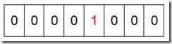
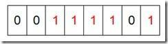

一、海量数据处理
所谓海量数据处理，无非就是基于海量数据上的存储、处理、操作。何谓海量，就是数据量太大，所以导致要么是无法在较短时间内迅速解决，要么是数据太大，导致无法一次性装入内存。
那解决办法呢?
针对时间，我们可以采用巧妙的算法搭配合适的数据结构，如Bloom filter/Hash/bit-map/堆/trie树。
针对空间，无非就一个办法：大而化小，分而治之（hash映射）。
二、算法/数据结构基础
1.Bloom Filter
Bloom Filter（BF）是一种空间效率很高的随机数据结构，它利用位数组很简洁地表示一个集合，并能判断一个元素是否属于这个集合。它是一个判断元素是否存在集合的快速的概率算法。Bloom Filter有可能会出现错误判断，但不会漏掉判断。也就是Bloom Filter判断元素不再集合，那肯定不在。如果判断元素存在集合中，有一定的概率判断错误。因此，Bloom Filter不适合那些“零错误”的应用场合。
而在能容忍低错误率的应用场合下，Bloom Filter比其他常见的算法（如hash，折半查找）极大节省了空间。
适用范围
可以用来实现数据字典，进行数据的判重，或者集合求交集
2.Hash
Hash，一般翻译做“散列”，也有直接音译为“哈希”的，就是把任意长度的输入（又叫做预映射， pre-image），通过散列算法，变换成固定长度的输出，该输出就是散列值。这种转换是一种压缩映射，也就是，散列值的空间通常远小于输入的空间，不同的输入可能会散列成相同的输出，而不可能从散列值来唯一的确定输入值。简单的说就是一种将任意长度的消息压缩到某一固定长度的消息摘要的函数。
具体参考：从头到尾解析Hash表算法
3. Bit-map
所谓的Bit-map就是用一个bit位来标记某个元素对应的值。由于采用了Bit为单位来存储数据，因此在存储空间方面，可以大大节省。
如果说了这么多还没明白什么是Bit-map，那么我们来看一个具体的例子，假设我们要对0-7内的5个元素(4,7,2,5,3)排序（这里假设这些元素没有重复）。那么我们就可以采用Bit-map的方法来达到排序的目的。要表示8个数，我们就只需要8个Bit（1Bytes），首先我们开辟1Byte的空间，将这些空间的所有Bit位都置为0(如下图：)

然后遍历这5个元素，首先第一个元素是4，那么就把4对应的位置为1（可以这样操作 p+(i/8)|(0x01<<(i%8)) 当然了这里的操作涉及到Big-ending和Little-ending的情况，这里默认为Big-ending）,因为是从零开始的，所以要把第五位置为一（如下图）：

然后再处理第二个元素7，将第八位置为1,，接着再处理第三个元素，一直到最后处理完所有的元素，将相应的位置为1，这时候的内存的Bit位的状态如下：

具体参考：数据结构：位图法
4.堆
堆是一种特殊的二叉树，具备以下两种性质
1）每个节点的值都大于（或者都小于，称为最小堆）其子节点的值
2）树是完全平衡的，并且最后一层的树叶都在最左边这样就定义了一个最大堆。
如下图用一个数组来表示堆：

5.trie树
下面我们有and,as,at,cn,com这些关键词，那么如何构建trie树呢？

从上面的图中，我们或多或少的可以发现一些好玩的特性。
第一：根节点不包含字符，除根节点外的每一个子节点都包含一个字符。
第二：从根节点到某一节点，路径上经过的字符连接起来，就是该节点对应的字符串。
第三：每个单词的公共前缀作为一个字符节点保存。
适用范围：
前缀统计，词频统计。
具体参考：6天通吃树结构—— 第五天 Trie树
6.外排序
适用范围：
大数据的排序，去重
基本原理及要点：
外部排序的两个独立阶段：
1）首先按内存大小，将外存上含n个记录的文件分成若干长度L的子文件或段。依次读入内存并利用有效的内部排序对他们进行排序，并将排序后得到的有序字文件重新写入外存，通常称这些子文件为归并段。
2）对这些归并段进行逐趟归并，使归并段逐渐由小到大，直至得到整个有序文件为之。
外排序的优化方法：置换选择 败者树原理，最优归并树
具体参考：选择置换+败者树搞定外部排序
三、面试问题解决
①、海量日志数据，提取出某日访问百度次数最多的那个IP。
算法思想：分而治之+Hash
1.IP地址最多有2^32=4G种取值情况，所以不能完全加载到内存中处理；
2.可以考虑采用“分而治之”的思想，按照IP地址的Hash(IP)%1024值，把海量IP日志分别存储到1024个小文件中。这样，每个小文件最多包含4MB个IP地址；
3.对于每一个小文件，可以构建一个IP为key，出现次数为value的Hash map，同时记录当前出现次数最多的那个IP地址；
4.可以得到1024个小文件中的出现次数最多的IP，再依据常规的排序算法得到总体上出现次数最多的IP；
②、 搜索引擎会通过日志文件把用户每次检索使用的所有检索串都记录下来，每个查询串的长度为1-255字节。假设目前有一千万个记录（这些查询串的重复度比较高，虽然总数是1千万，但如果除去重复后，不超过3百万个。一个查询串的重复度越高，说明查询它的用户越多，也就是越热门。），请你统计最热门的10个查询串，要求使用的内存不能超过1G。
可以在内存中处理，典型的Top K算法
算法思想：hashmap+堆
1.先对这批海量数据预处理，在O（N）的时间内用Hash表完成统计；
2.借助堆这个数据结构，找出Top K，时间复杂度为O(N*logK)。
或者：采用trie树，关键字域存该查询串出现的次数，没有出现为0。最后用10个元素的最小推来对出现频率进行排序。
③、有一个1G大小的一个文件，里面每一行是一个词，词的大小不超过16字节，内存限制大小是1M。返回频数最高的100个词。
算法思想：分而治之 + hash统计 + 堆排序
1.顺序读文件中，对于每个词x，取hash(x)%5000，然后按照该值存到5000个小文件（记为x0,x1,...x4999）中。这样每个文件大概是200k左右。如果其中的有的文件超过了1M大小，还可以按照类似的方法继续往下分，直到分解得到的小文件的大小都不超过1M。
2.对每个小文件，采用trie树/hash_map等统计每个文件中出现的词以及相应的频率。
3.取出出现频率最大的100个词（可以用含100个结点的最小堆）后，再把100个词及相应的频率存入文件，这样又得到了5000个文件。最后就是把这5000个文件进行归并（类似于归并排序）的过程了。
④、有10个文件，每个文件1G，每个文件的每一行存放的都是用户的query，每个文件的query都可能重复。要求你按照query的频度排序。
方案1：
算法思想：分而治之 + hash统计 + 堆排序
顺序读取10个文件，按照hash(query)%10的结果将query写入到另外10个文件中。这样新生成的文件每个的大小大约也1G，大于1G继续按照上述思路分。
找一台内存在2G左右的机器，依次对用hash_map(query, query_count)来统计每个query出现的次数。利用快速/堆/归并排序按照出现次数进行排序。将排序好的query和对应的query_cout输出到文件中。这样得到了10个排好序的文件（记为）。
对这10个文件进行归并排序（内排序与外排序相结合）。
方案2：
算法思想：hashmap+堆
一般query的总量是有限的，只是重复的次数比较多而已，可能对于所有的query，一次性就可以加入到内存了。这样，我们就可以采用trie树/hash_map等直接来统计每个query出现的次数，然后按出现次数做快速/堆/归并排序就可以了。
⑤、 给定a、b两个文件，各存放50亿个url，每个url各占64字节，内存限制是4G，让你找出a、b文件共同的url
方案1：可以估计每个文件安的大小为5G×64=320G，远远大于内存限制的4G。所以不可能将其完全加载到内存中处理。考虑采取分而治之的方法。
算法思想：分而治之 + hash统计
遍历文件a，对每个url求取hash(url)%1000，然后根据所取得的值将url分别存储到1000个小文件（记为a0,a1,...,a999）中。这样每个小文件的大约为300M。
遍历文件b，采取和a相同的方式将url分别存储到1000小文件（记为b0,b1,...,b999）。这样处理后，所有可能相同的url都在对应的小文件（a0vsb0,a1vsb1,...,a999vsb999）中，不对应的小文件不可能有相同的url。然后我们只要求出1000对小文件中相同的url即可。
求每对小文件中相同的url时，可以把其中一个小文件的url存储到hash_set中。然后遍历另一个小文件的每个url，看其是否在刚才构建的hash_set中，如果是，那么就是共同的url，存到文件里面就可以了。
方案2：如果允许有一定的错误率，可以使用Bloom filter，4G内存大概可以表示340亿bit。将其中一个文件中的url使用Bloom filter映射为这340亿bit，然后挨个读取另外一个文件的url，检查是否与Bloom filter，如果是，那么该url应该是共同的url（注意会有一定的错误率）。
⑥、在2.5亿个整数中找出不重复的整数，注，内存不足以容纳这2.5亿个整数。
采用2-Bitmap（每个数分配2bit，00表示不存在，01表示出现一次，10表示多次，11无意义）进行，共需内存2^32 * 2 bit=1 GB内存，还可以接受。然后扫描这2.5亿个整数，查看Bitmap中相对应位，如果是00变01，01变10，10保持不变。所描完事后，查看bitmap，把对应位是01的整数输出即可。
⑦、给40亿个不重复的unsigned int的整数，没排过序的，然后再给一个数，如何快速判断这个数是否在那40亿个数当中？
方案1：申请512M的内存，一个bit位代表一个unsigned int值。读入40亿个数，设置相应的bit位，读入要查询的数，查看相应bit位是否为1，为1表示存在，为0表示不存在。
方案2：因为2^32为40亿多，所以给定一个数可能在，也可能不在其中；
这里我们把40亿个数中的每一个用32位的二进制来表示
假设这40亿个数开始放在一个文件中。
然后将这40亿个数分成两类:
1.最高位为0
2.最高位为1
并将这两类分别写入到两个文件中，其中一个文件中数的个数<=20亿，而另一个>=20亿（这相当于折半了）；
与要查找的数的最高位比较并接着进入相应的文件再查找
再然后把这个文件为又分成两类:
1.次最高位为0
2.次最高位为1
并将这两类分别写入到两个文件中，其中一个文件中数的个数<=10亿，而另一个>=10亿（这相当于折半了）；
与要查找的数的次最高位比较并接着进入相应的文件再查找。
.......
以此类推，就可以找到了。